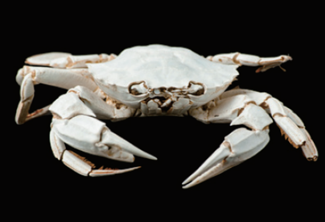
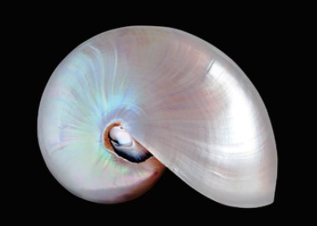
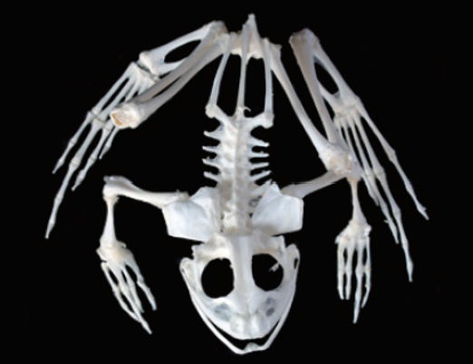
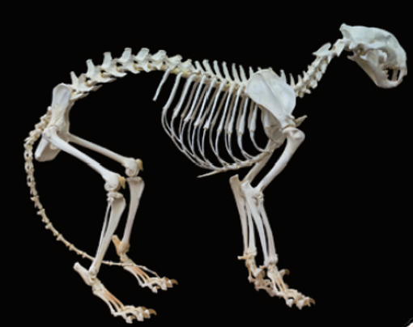

在認識六大無脊椎動物門之前，先學會像科學家一樣觀察：哪些特徵可以幫助我們把動物分成不同類群？
動物界的生物大多具有幾個共同特徵：牠們是多細胞生物，細胞不具細胞壁，也沒有葉綠體，通常以攝食其他生物維生。
觀察動物時，不能只看牠可不可愛或顏色漂不漂亮，更重要的是看牠的身體構造、細胞分工與身體複雜程度。這些線索都可以作為分類依據。
例如蟹和螺沒有脊椎骨，但可能有外骨骼或外殼保護身體；蛙和虎有從頸部延伸到尾端的脊椎骨，因此屬於脊椎動物。




動物的身體構造與複雜程度可以作為分類依據。
所有沒有脊椎骨的動物，身體構造都完全相同。
蟹、螺雖然沒有脊椎骨，但可能有外骨骼或外殼形成外形。